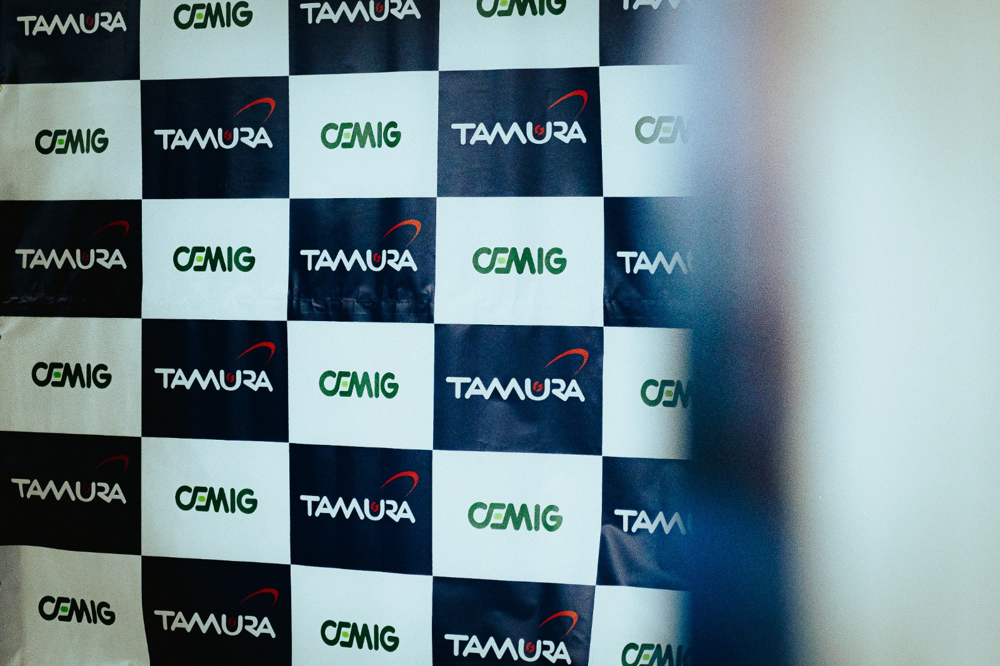
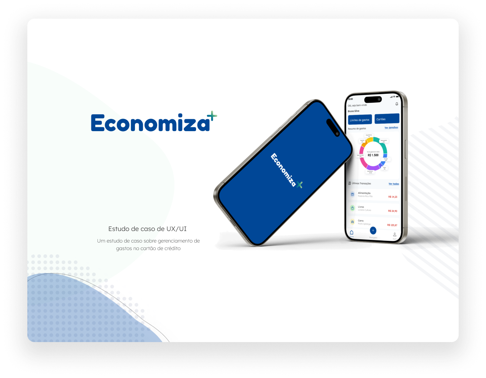
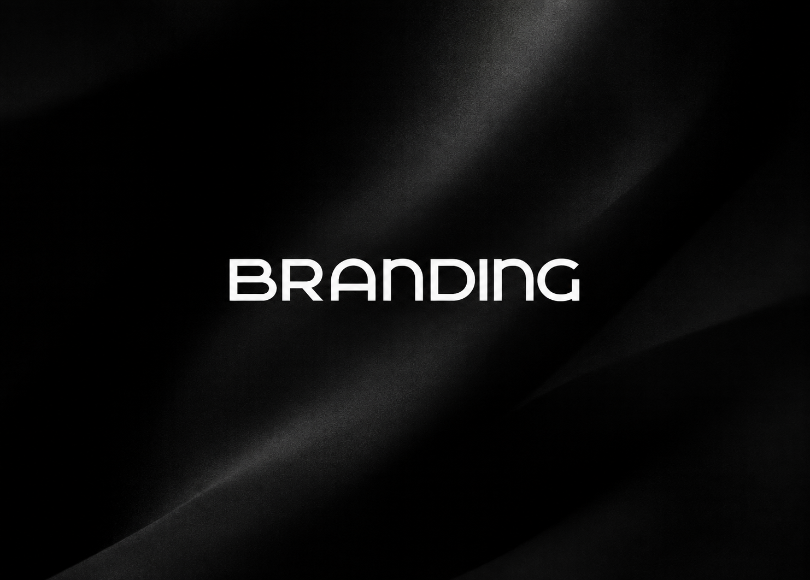
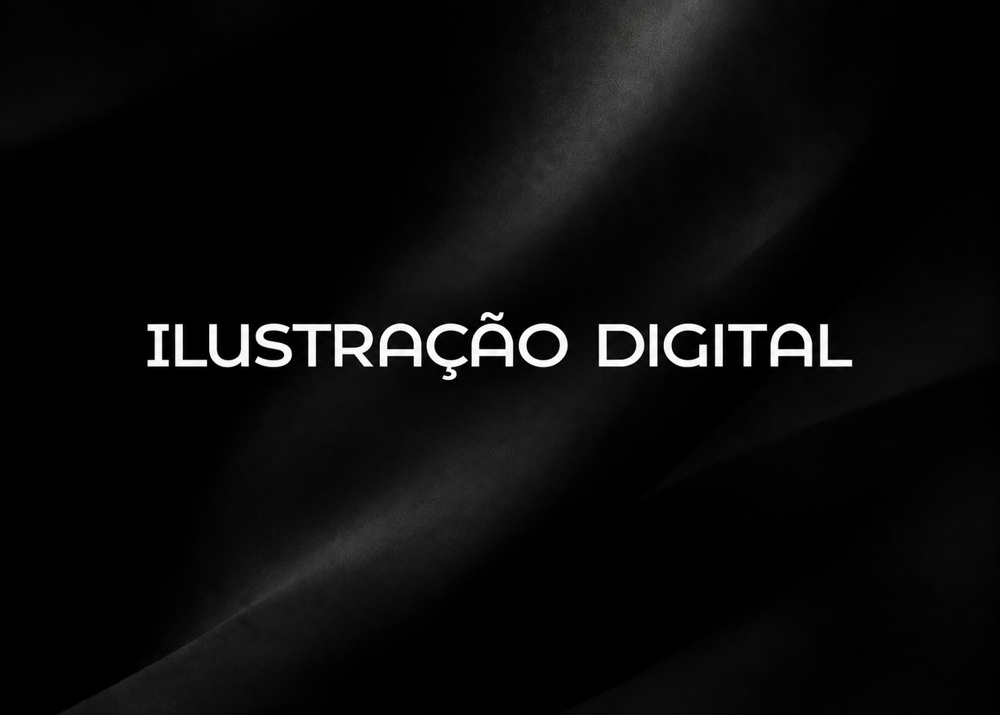

PROJETO 01 · Comunicação Visual · Evento

Tech Day2026 · Evento
Criação da identidade visual do Tech Day, desde o conceito gráfico até o desenvolvimento dos materiais que compuseram a experiência visual do evento.
Ver projeto completo ↗
Uma seleção de trabalhos, com contexto, contribuição e resultados de cada projeto.

Criação da identidade visual do Tech Day, desde o conceito gráfico até o desenvolvimento dos materiais que compuseram a experiência visual do evento.

Design de um aplicativo para organização e acompanhamento de gastos com cartão de crédito, com foco em uma experiência simples, intuitiva e funcional.

Criação da identidade visual da marca URBAN como trabalho de conclusão do curso de Design de Moda.

Criação de croquis digitais de moda e desenhos artísticos, explorando diferentes temas e expressões visuais.

Desenvolvimento de um portfólio pessoal para a graduação em Análise e Desenvolvimento de Sistemas, reunindo apresentação, projetos e contato em uma interface responsiva.
Tem um projeto em mente? Vamos conversar.
Entre em contato ↗